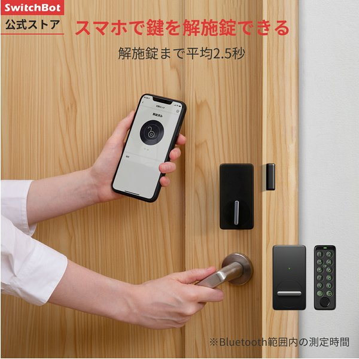
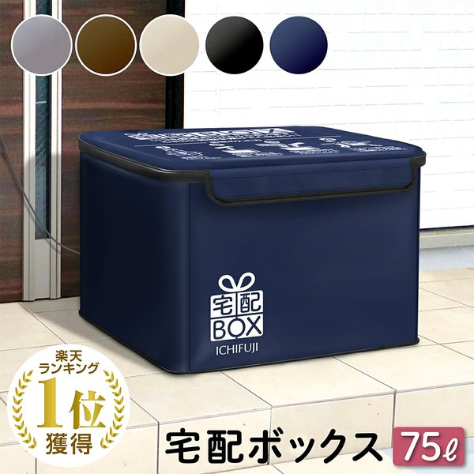
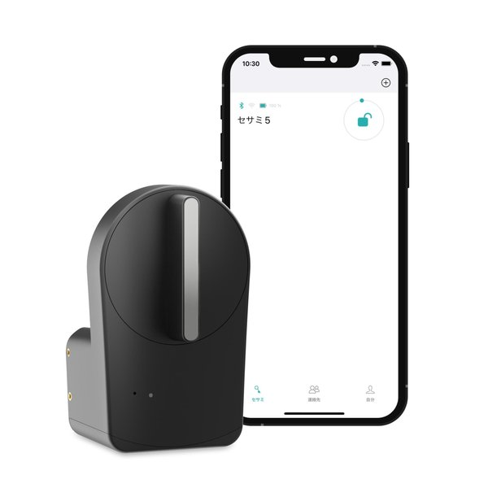
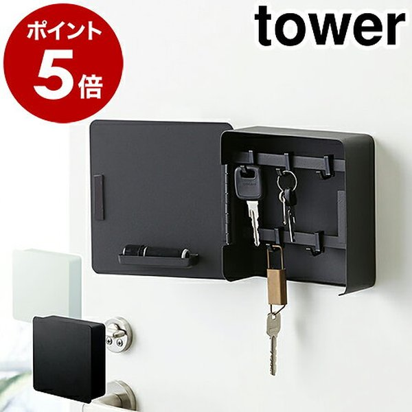
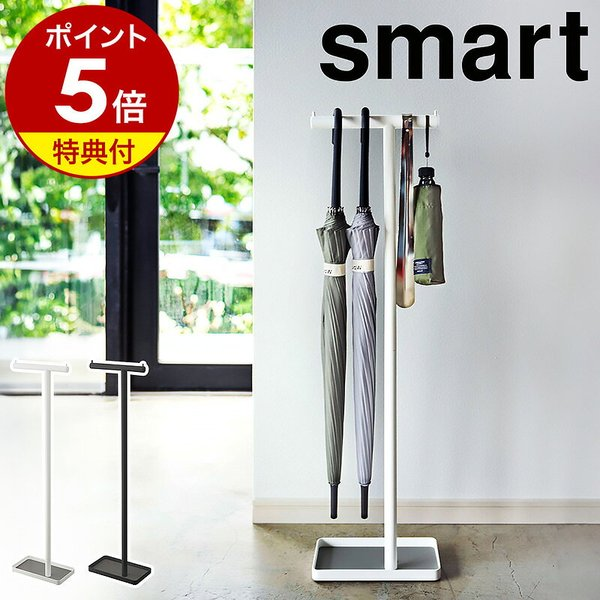
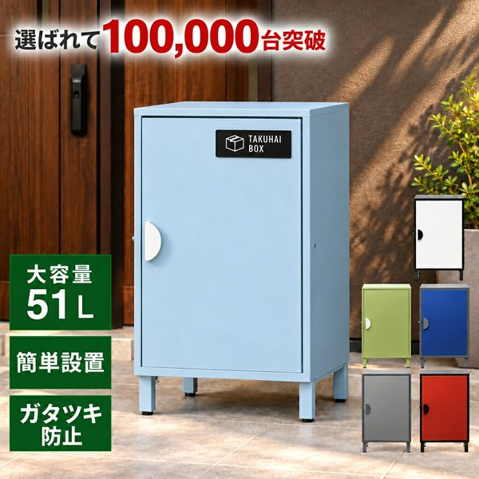
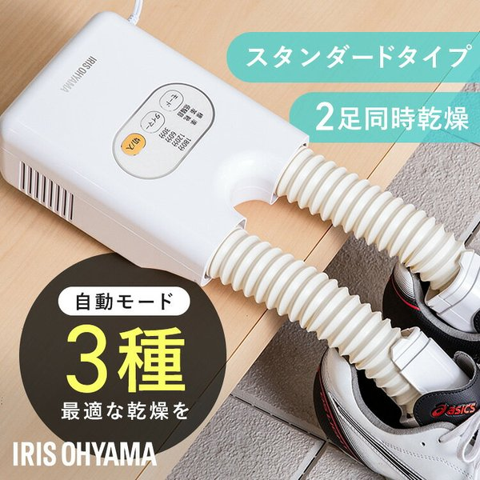
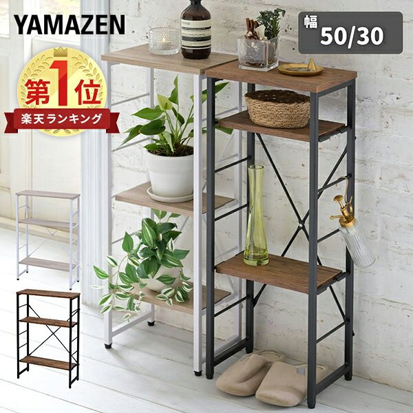
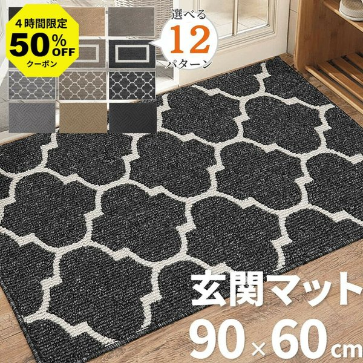
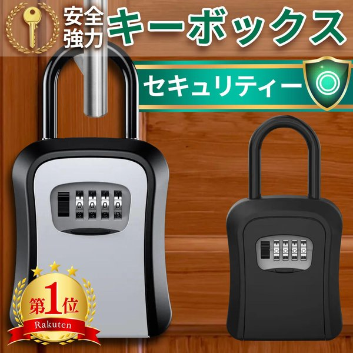

【2026年最新】玄関が劇的に快適に！スマートロック・置き配宅配ボックス・山崎実業tower玄関収納＆傘・鍵の便利グッズ10選
玄関は、家のなかでいちばん動作が多い場所です。鍵を開ける、荷物を受け取る、傘を置く、靴を脱ぐ。この4つが少しでも楽になると、毎日の出入りが軽くなります。
選ぶ軸は、工事が必要か、置く場所があるか、そして家族全員が使えるかです。スマートロックは後付けタイプなら、既存の鍵をそのまま使えて賃貸でも導入できます。置き配の宅配ボックスは、再配達の回数を減らすだけでなく、共働きで日中不在の家ほど効果が出ます。収納は、マグネット式のキーフックや吊り下げ式の傘立てなら、床を空けたまま使えます。鍵はキーボックスに入れておけば、家族が先に帰ったときも困りません。玄関マットと靴乾燥機は、雨の日の匂いと濡れた靴をまとめて解決します。
本記事では、楽天市場で人気・高評価の玄関の便利グッズ10選を、実売価格とレビュー評価つきで写真付き紹介します。
- おすすめ10選 スペック・特徴比較表
- BEST 1｜SwitchBot スマートロック＆指紋認証パッド セット（Suica解錠対応）
- BEST 2｜宅配ボックス 折りたたみ 75L 防水・ワイヤー付き（置き配用）
- BEST 3｜セサミ6 SESAME6 スマートロック（後付け・Alexa/Google/Siri対応）
- BEST 4｜山崎実業 tower マグネットキーフック2段（玄関収納）
- BEST 5｜山崎実業 ハンギングかさたて スマート（吊り下げ式傘立て）
- BEST 6｜宅配ボックス クレア 51L 完成品（一戸建て・置き配用）
- BEST 7｜アイリスオーヤマ 靴乾燥機 2足同時（シューズドライヤー）
- BEST 8｜山善 コンソールテーブル スリム 幅30/50・奥行20cm（棚が動く）
- BEST 9｜玄関マット 屋外・室内用 泥落とし 90×60cm（滑り止め付き）
- BEST 10｜キーボックス ダイヤル式 壁掛け・ワイヤー式（屋外・防犯用）
- 【読者負担0円】買わなくても得する無料サービス
- まとめ：玄関の便利グッズ10選の選び方
| 順位 | 商品名 | ブランド | 最大の特徴・おすすめ理由 | 総合評価 |
|---|---|---|---|---|
| BEST 1 | SwitchBot スマートロック＆指紋認証パッド セット（Suica解錠対応） | SwitchBot（スイッチボット） | 工事不要の後付けタイプ | 4.60 |
| BEST 2 | 宅配ボックス 折りたたみ 75L 防水・ワイヤー付き（置き配用） | 宅配ボックス 専門店 | 75Lの大容量 | 4.53 |
| BEST 3 | セサミ6 SESAME6 スマートロック（後付け・Alexa/Google/Siri対応） | CANDY HOUSE | 既存の鍵のまま後付けできる | 4.45 |
| BEST 4 | 山崎実業 tower マグネットキーフック2段（玄関収納） | 山崎実業 tower | マグネット式で穴を開けない | 4.59 |
| BEST 5 | 山崎実業 ハンギングかさたて スマート（吊り下げ式傘立て） | 山崎実業 smart | 吊り下げ式で床が濡れない | 4.74 |
| BEST 6 | 宅配ボックス クレア 51L 完成品（一戸建て・置き配用） | 宅配ボックス 専門店（クレア） | 完成品ですぐ使える | 4.59 |
| BEST 7 | アイリスオーヤマ 靴乾燥機 2足同時（シューズドライヤー） | アイリスオーヤマ | 2足を同時に乾燥できる | 4.51 |
| BEST 8 | 山善 コンソールテーブル スリム 幅30/50・奥行20cm（棚が動く） | 山善（YAMAZEN） | 奥行20cmのスリム設計 | 4.68 |
| BEST 9 | 玄関マット 屋外・室内用 泥落とし 90×60cm（滑り止め付き） | 玄関マット 専門店 | 土足で使える泥落としタイプ | 4.60 |
| BEST 10 | キーボックス ダイヤル式 壁掛け・ワイヤー式（屋外・防犯用） | 防犯グッズ 専門店 | ダイヤル式で暗証番号を変更できる | 4.57 |
SwitchBot スマートロック＆指紋認証パッド セット（Suica解錠対応）

ドアのサムターンに後付けするスマートロックと、指紋認証パッドのセット。工事なしで取り付けられ、スマホ・指紋・暗証番号・カードで解錠できます。両手が買い物袋で塞がっているときも、指を置くだけでドアが開くのは、毎日の出入りで効きます。Suicaでの解錠にも対応し、家族それぞれの解錠方法を分けられます。楽天市場での実売価格は約10,183円（2026年11月時点）。
- 工事不要の後付けタイプ
- 指紋・暗証番号・カード・スマホで解錠
- レビュー978件・評価4.60
- ドアの形状によっては取付アダプターが必要になる
宅配ボックス 折りたたみ 75L 防水・ワイヤー付き（置き配用）

玄関先に置いて置き配を受け取るための折りたたみ式宅配ボックス。75Lと大きめで、米や水のケースもある程度入ります。使わないときは畳めるので、集合住宅の玄関先でも場所を取りません。ワイヤーで固定でき、防水仕様なので、雨の日の再配達を減らせます。楽天市場での実売価格は約3,980円（2026年11月時点）。
- 75Lの大容量
- 使わないときは折りたためる
- レビュー2,912件・評価4.53
- ワイヤーは頑丈だが、完全な防盗対策にはならない
セサミ6 SESAME6 スマートロック（後付け・Alexa/Google/Siri対応）

玄関の鍵を後付けでスマート化するセサミ6。既存の鍵をそのまま使えるので、大家さんの許可が要りません。スマホのアプリで解錠でき、音声アシスタントにも対応しているため、家に着いてからスマホを出す手間が省けます。家族には鍵を共有でき、来客時は一時的な解錠権限を渡せます。楽天市場での実売価格は約6,980円（2026年11月時点）。
- 既存の鍵のまま後付けできる
- 音声操作・鍵の共有に対応
- レビュー344件・評価4.45
- 電池の残量はアプリで時々確認しておく
山崎実業 tower マグネットキーフック2段（玄関収納）

玄関ドアや壁にマグネットで付ける、2段のキーフック。帰宅したら鍵を掛ける場所が決まっているだけで、朝の「鍵がない」がなくなります。上段と下段で家族の場所を分けられ、車の鍵と家の鍵をまとめられます。穴を開けずに設置できるので、賃貸でも使いやすいです。楽天市場での実売価格は約2,420円（2026年11月時点）。
- マグネット式で穴を開けない
- 2段で家族分を分けられる
- レビュー939件・評価4.59
- マグネットが付かないドアには、付属の方法では取り付けられない
山崎実業 ハンギングかさたて スマート（吊り下げ式傘立て）

傘を吊り下げて収納するタイプの傘立て。床に置く傘立てと違い、傘の先が床に付かず、水滴が溜まりません。玄関のポールやフックに掛けられるので、狭い玄関でも場所を取りません。折りたたみ傘も掛けられ、帰宅後そのまま乾かせます。楽天市場での実売価格は約4,090円（2026年11月時点）。
- 吊り下げ式で床が濡れない
- 折りたたみ傘も掛けられる
- レビュー972件・評価4.74
- 掛ける場所の高さと耐荷重を確認しておく
宅配ボックス クレア 51L 完成品（一戸建て・置き配用）

組み立て不要で届く完成品の宅配ボックス。51Lの容量で、段ボール2〜3個がまとめて入ります。鍵付きなので、置き配だけでなく、家族以外に渡したくない荷物の一時保管にも使えます。樹脂製で雨に強く、玄関横に置いても生活感が出にくい形です。楽天市場での実売価格は約9,980円（2026年11月時点）。
- 完成品ですぐ使える
- 51Lで複数個口も入る
- レビュー424件・評価4.59
- 置き場所の寸法を測ってから注文する
アイリスオーヤマ 靴乾燥機 2足同時（シューズドライヤー）

2足を同時に乾かせる靴乾燥機。雨で濡れた靴や、子どもの上靴を夜のうちに乾かせます。温風のモードが3種類あり、革靴とスニーカーで使い分けられます。梅雨や雪の日だけでなく、汗をかく夏の臭い対策にも使えるので、玄関に1台あると年間を通して出番があります。楽天市場での実売価格は約5,881円（2026年11月時点）。
- 2足を同時に乾燥できる
- 3種類のモード切替
- レビュー491件・評価4.51
- 革靴は高温で変形することがあるので、低温モードを使う
山善 コンソールテーブル スリム 幅30/50・奥行20cm（棚が動く）

奥行20cmのスリムなコンソールテーブル。玄関の壁際に置いても通路をふさがず、上に置いた鍵や郵便物の定位置を作れます。棚板が動かせるので、高さのある観葉植物や傘を置くこともできます。幅30cmと50cmから選べ、玄関の空き寸法に合わせられます。楽天市場での実売価格は約5,499円（2026年11月時点）。
- 奥行20cmのスリム設計
- 棚の位置を動かせる
- レビュー165件・評価4.68
- 耐荷重は軽めなので、重いものは載せない
玄関マット 屋外・室内用 泥落とし 90×60cm（滑り止め付き）

土足で使える泥落としの玄関マット。90×60cmで、両足を置いて靴を脱ぐのに十分な大きさです。パイルが泥や砂を絡め取るので、上がり框から室内に砂が入りにくくなります。滑り止め付きで、子どもが走ってもずれません。洗える素材なので、汚れたら水で流せます。楽天市場での実売価格は約2,980円（2026年11月時点）。
- 土足で使える泥落としタイプ
- 90×60cmの十分な大きさ
- レビュー415件・評価4.60
- 毛足が長いので、玄関のドアの開閉に干渉しないか確認する
キーボックス ダイヤル式 壁掛け・ワイヤー式（屋外・防犯用）

暗証番号で開けるダイヤル式のキーボックス。玄関の外に固定して、家族の合鍵や車の鍵を入れておけます。置き配の受け取りや、家族が先に帰ったときの解錠に使えます。ワイヤー式でドアノブにも掛けられ、壁に固定すれば持ち去られにくくなります。暗証番号は自分で変更できます。楽天市場での実売価格は約1,990円（2026年11月時点）。
- ダイヤル式で暗証番号を変更できる
- 壁掛け・ワイヤーの2通り
- レビュー700件・評価4.57
- 暗証番号は誕生日など推測されやすい数字を避ける
この記事の商品を買う前に、まずは無料で得する選択肢をチェック。どれも登録・利用は0円で、無料期間中に解約すれば料金はかかりません。読みたい雑誌がある人、ポイントを貯めたい人、アンケートなら気軽という人、それぞれに合うものを選べます。
初回31日無料・無料期間中に解約すれば0円 → 楽天ポイントモール｜登録無料で毎日ポイ活
買い物なしでもポイントが貯まる無料サービス → 楽天インサイト｜アンケートに答えてポイント
登録無料・すきま時間のアンケートで貯まる → 楽天カード｜年会費永年無料
新規発行・年会費ずっと0円 →
4つのサービスの違いと使い分けは「出費0円で得する！買わずにポイントが貯まる無料サービス厳選4選」でまとめています。
💡 まとめ：玄関の便利グッズ10選の選び方
玄関の快適さは、鍵・荷物・傘・靴の4つを整える順番で決まります。まず鍵を後付けのスマートロックにして、両手が塞がっていても入れるようにする。次に置き配の宅配ボックスを置き、再配達を減らします。収納はマグネットのキーフックと吊り下げ式の傘立てで床を空け、スリムなコンソールで郵便物の定位置を作ります。雨の日は泥落としマットと靴乾燥機があると、室内に砂と湿気を持ち込まずに済みます。スマートロックはドアの形状と電池の持ちを確認し、賃貸なら原状回復できるタイプを選んでください。全部を一度に揃えず、不便を感じた順に足していくのが続けやすい買い方です。
楽天市場では「5と0のつく日」や「お買い物マラソン」などのキャンペーンに合わせて購入すると、ポイント還元が最大化してお得に手に入ります。ぜひチェックしてみてくださいね。